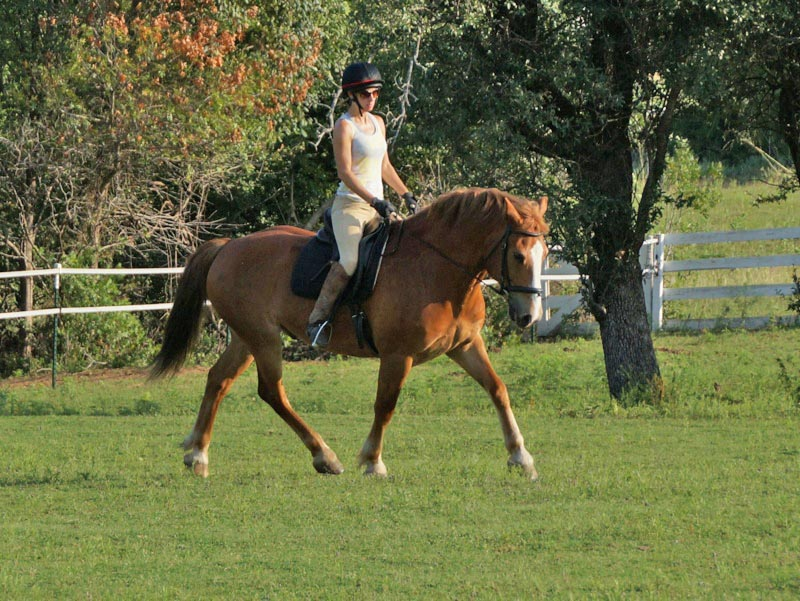

Thistle working on dressage
Emily came out to put some rides on Thistle. It was interesting to
see how he looked in his dressage work with someone else. Sometimes he looked like work,
but mostly it made me want to get on and play.
A little distracted, but it
didn't take long for him to get used to Emily.
He relaxed into his warm up nicely.
I don't think Emily has worked with such a wide horse, but she was able to use her
legs effectively.
First trot of the day. Responsive but a bit short.

Starting to get a little more reach.
He's not as sharp off the left leg, but then again my left leg isn't as effective
on anyone and I've been riding him.

Using his back and reaching under from behind. He's really a lot of fun with dressage
because of his strength and way of going.
They were good in the canter to the right.
This is a sequence of photos.
I can see why Bart likes the multi-shot mode.
It's nice to see him stay in frame consistently at the canter.
A bit above the bit after a downward transition.
But he comes back in frame pretty readily.
Not completely steady, especially to the left.
Even when he shortens his stride he stays active.
Nicely lengthening his trot.

Not good in the transition, but we knew left needed more work.
Coming back into frame and bending off the left leg is good.
We need to get him more balanced, but for their second ride they were looking
pretty good.